Welcome to the monitoring frontend application! This application provides you an intuitive and easy to use user interface to keep you 'in-touch' with your network devices. This guide allows you to learn the features of this application.
Easily Monitor your Network Devices
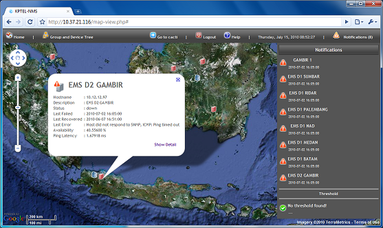Main interface of this application is the map itself. Your devices and groups will be displayed on the map along with its UP/DOWN/RECOVER status. You can get your servers' health status and metrics with a few clicks only.
Menus
 |
Sets the map to 'home' location. |
| 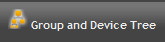 | Shows the hierarchy of your devices and groups. |
| 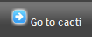 | Opens the cacti console. |
| 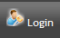 | Lets you to authenticate and enables map editing. |
| 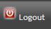 | Logout from map editing-enabled interface. |
| 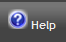 | Shows you this guide. |
| 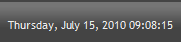 | Shows you time and date. |
| 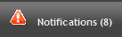 | Notify you if there are changes in device status or threshold breaches. |
Legends
| Group icon. | |
| Device icon (UP). | |
| 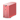 | Device icon (DOWN). |
| Device notification icon (UP). | |
| Device notification icon (DOWN). | |
| Device notification icon (RECOVER). |
Displaying Device Details
To display the device's less detailed information, just click the device's icon on the map.
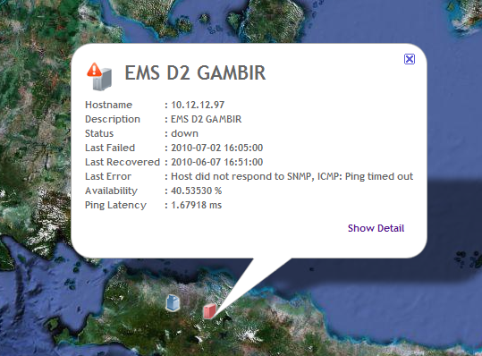To display the device's more detailed information, click 'Show Detail' on the information box. The associated graph and its timespan will be listed on the left pane.
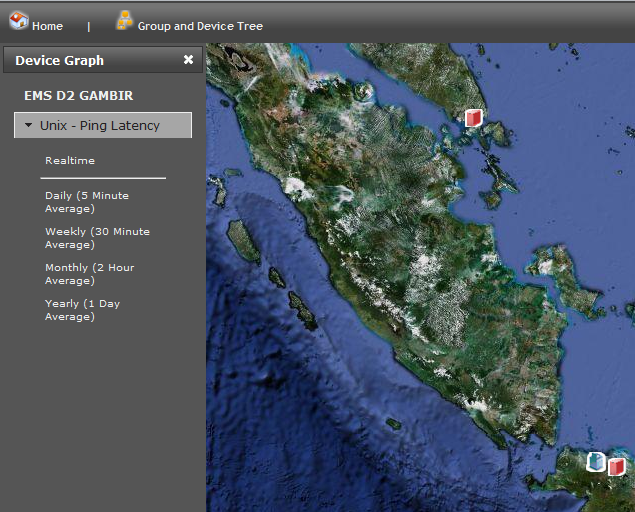